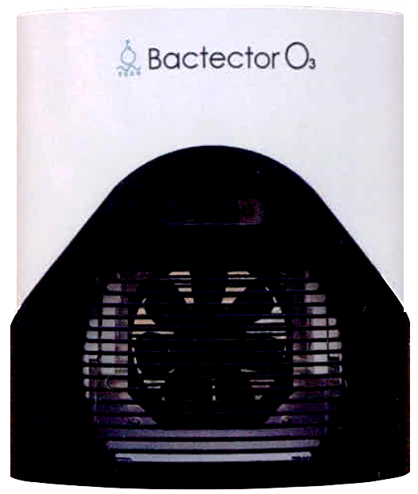

白内障手術実績2000件以上 眼底疾病症研究歴１5年 手術をしない裸眼視力の回復 児童の近視進行の抑制 ナイトレンズの処方
本日の受付状況
当院はコロナウイルス対策として救急車にも採用されているオゾン除菌装置を設置しています。強力な除菌力を有するオゾンの発生器でコロナウイルス対策に有用です。
この度は、綾瀬うえむら眼科ホームページをご覧頂き、誠にありがとうございます。
「最近見にくくなったけど、大丈夫かなあ」
「悪い病気だったらいやだなぁ」
どなたでも病院に行く時は不安です。
綾瀬うえむら眼科に来ていただいた方には、悩みや不安にしっかりとお答えするように心がけています。 また、納得して治療を受けて頂けるよう、患者様の目の写真をできるだけ使ってわかりやすく説明しています。これまでの経験・知識を総動員して最適な治療を患者様にご提供して、「安心しました」「来て良かった」と感じていただけるように日々研究努力しています。
あなたの症状は？
| 痛い | かゆい | 目やにがでる |
| 涙がでる | 目が乾く | かすんで見える |
| だぶって見える | 中心がゆがむ | 見えない部分がある |
眼科全般・緑内障・糖尿病網膜症（網膜硝子体疾患）・加齢黄斑変性・日帰り白内障手術・小児眼科（斜視・弱視）・オルソケラトロジー

■ 綾瀬うえむら眼科院長 植村明弘
■ 資格
医学博士、オルソケラトロジー認定医、日本眼科学会認定眼科専門医、
光線力学療法認定医、ボトックス治療認定医
■ 略歴
■ 眼科医師 窪田真理子
窪田先生は私（植村）の大学時代からの同級生で千葉大学眼科にも同期入局しており、令和4年度まで千葉大学医局に所属し千葉市立海浜病院の眼科医長を勤めながら千葉大学医学部附属病院で黄斑外来の担当もされていた優秀な先生です。
現在も非常勤医師として週に1回同大学病院の黄斑外来に出ていらっしゃいます。患者さんへの説明も丁寧な先生です。毎週金曜日の午後、私と共に2診体制になりますので、窪田先生をご希望の方は受付にてご指名ください。
■ 眼科医師 星野章子
星野先生と窪田先生、私（植村）は千葉大学時代からの同級生で千葉大学眼科にも同期入局しています。星野先生は令和5年まで千葉大学医局に所属されており、大学時代は糖尿病網膜症外来等を担当され、その後千葉市立青葉病院の医長を長く勤めてこられました。
難治性ドライアイをはじめとした前眼部疾患、甲状腺眼症、移植片対宿主病（GVHD）関連の眼疾患に精通されており多くの経験を積んでおられる先生です。患者さんへの説明も非常に丁寧な先生です。毎週火曜日は、私と共に2診体制になりますので、星野先生をご希望の方は受付にてご指名ください。
■ 住所 東京都足立区綾瀬4－8－17 相善ビル2F
■ 電話 03-3620-4113
■ 交通 JR常磐線各駅・地下鉄千代田線
綾瀬駅 西口 徒歩２分
※オレンジの看板が目印です
院内はすべてバリアフリーです

駅側の外観

江北橋通り側の外観
※ご応募は、お気軽にお電話（03-3620-4113）ください。